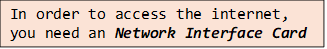
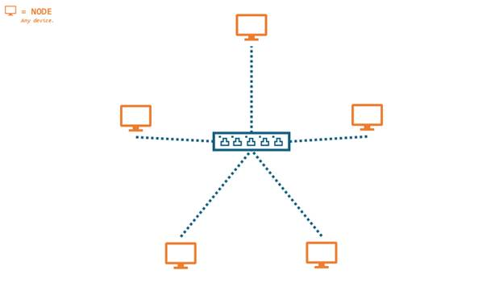
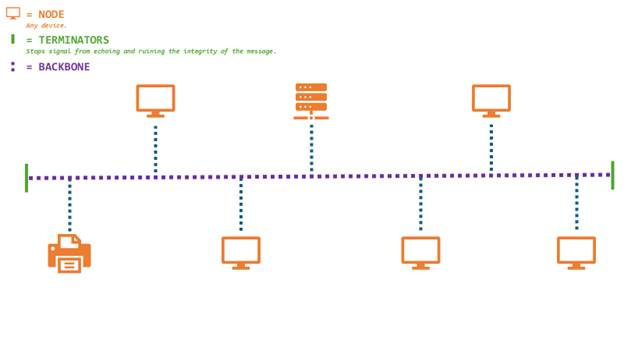
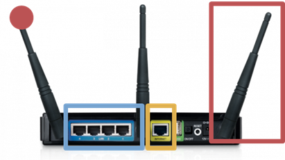
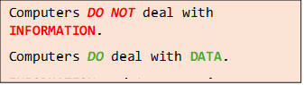
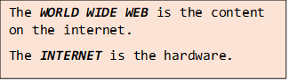

UNIT 5: Networks

Standalone
Standalone – A machine that can't communicate with any other machine.
Advantages
· You cannot be hacked externally.
· It cannot get a virus externally.
Disadvantages
· You can't share data.
· You can’t share devices, such as printers.
Types of Networks
· PAN – Personal Area Network
♦ Network based around a single person.
♦ Examples:
§ Phone (HUB)
§ Headphones
§ Laptop
§ Smart Watches
§ VR Headsets
§ Pacemaker
§ Speaker
§ Apple AirTag
§ Wireless Blood Sugar Receivers
§ Smart Ring
♦ Usually through Bluetooth or Wi-Fi.
♦
· LAN – Local Area Network
♦ Multi users.
♦ Small geographical location.
♦ Hardware is privately owned.
· WAN – Wide Area Network
♦ Millions of users.
♦ Examples:
§ Internet itself
♦ Publicly owned.
♦ Large geographical location.
Network Topology
· Topology = Layout.
STAR NETWORK
Advantages
· Each node is separately connected, therefore a failure of one node or its link – transmission media – does not affect any other nodes.
· Improved security.
· New nodes can be added to the network simply by connecting them to the switch.
· Star networks tend to have higher performance as a message is passed on to its intended node only.
Disadvantages
· The whole network fails if the switch fails as no node can communicate.
· A wired star topology requires plenty of cable – in a large network this can be expensive.

BUS NETWORK
Advantages
· It is easy to connect nodes to the network.
· Less cabling is needed compared to a star topology, making it cheaper to install.
Disadvantages
· The whole network fails if the backbone cable is broken.
· Terminators must be installed at each end of the backbone.
· Having one backbone increases the chances of data collision.

In the real world you will not see one network of star or bus topology type. A good network technician will mix the two together, to maximize advantages and minimize cost.
Wireless
|
Wireless Method |
Advantages |
Disadvantages |
|
Wi-Fi |
· Set up – Only thing you need is a wireless router. · Cost – Cheaper: only the cost of the router. · Mobility – You can access the network anywhere around the router. |
· Bandwidth – Slower: 54 Mbps. New standards achieve up to 300 Mbps. · Security – Poor: Anyone within range of the router can use it unless it's secured with a security password. · Strength weakens the further away you are from the router you are. · 2.4 Ghz can be affected by weather conditions. |
|
Bluetooth |
· Low cost to set up. · Uses relatively little power compared to other types of wireless connection. · You can easily set up Bluetooth networks with other Bluetooth enabled devices.
|
· Short range. · Low level of security. · Low data transmission rate. |
|
Zigbee |
· Can support up to 65000 nodes. · Suitable for Low-Power devices. Low power consumption. · Zigbee is a mesh network, it can be repeated by nodes and repeaters. · Simple installation. |
· Network interference is a common problem as it uses the 2.4 Ghz band. Which is used by many other wireless devices. Network overcrowding and channel noise causes this. · Expensive. · Security risks and compatibility are poor. |
|
RFID / NFC |
· Strong security. Used in things such as bank cards. · Easily used. · Sort setup time. · Lower battery consumption. |
· High cost. · Easily used for scamming such as Cash Point skimming or NFC relay attack. · Limited range. · Low data transfer rate. Only around 400 Kbit/s. |
Wireless Networks
Can include:
· Radio frequencies.
· Satellite.
· Bluetooth.
· Infared.
· Wi-Fi
o Wi-Fi uses radio waves.
Typical home Wi-Fi setup
· Wireless router includes:
o Network switch.
o Router (to connect to ISP).
o Wireless access point.

Wi-Fi Hotspot
· Found in public buildings.
· Enables any Wi-Fi enabled device to connect and use the Internet.
· Some places may charge access.
· Usually unencrypted.
o Data can be read by anyone on the network.
o Encrypted networks are better.
§ Scrambles data so it can't be understood.
o Use a VPN (virtual private network).
§ Creates a private connection.
· Can be set up on a mobile phone for personal use.
o Known as tethering.

Chapter 5-1 Questions
1)
a) Wireless Access Point – To allow devices to connect. wirelessly.
b) Switch – Routes data packets.
c) Cable – Carries the signal, data.
2)
a)
i) LAN – Uses cables owned by the company.
ii) PAN – Can use Bluetooth to connect a phone ‘hands-free’.
iii) WAN – Computers are not close together.
b)
i) LAN – Uses cables owned by the company.
ii) PAN – Can use Bluetooth to connect a phone ‘hands-free’.
iii) WAN – The internet.
3) Functions a server may do are that it may store data, processes requests, security, and share software.
4)
a) Advantages of networking computers in a nursery school are:
i) Looking data up on multiple machines.
ii) Resource sharing (hardware).
iii) Teacher resources shared (software).
iv) Communication.
b) Disadvantages of networking computers at home are:
i) Home can be hacked.
ii) Expensive set-up.
iii) Constant internet use.
5)
a)
i) The school uses fiber optic because it's faster and doesn't lose signal over a distance.
ii) The school will use copper cable as it is cheaper.
iii) Three reasons why the school may use wireless access points are
b) It isn't encrypted so the owners could access your data. VPN’s may sell your data. However, the company risks their reputation by letting users of the network have unrestricted access to the internet.
6)
a) Wi-Fi signal could be lost regularly due to interference created by things such as water (steam, water, and droplets), thick walls also affect Wi-Fi signals, placement of access points also affect the signal (such as a changing room).
b) Star topology is better in a school environment as it is more secure, and it has a direct link to the network switch, this means it doesn't need to compete with other computers on the backbone for time.

Network Protocols
· Protocols are a set of rules.
· Network Protocol – Rules for data transmission.
· Protocols include rules for:
o Error checking methods.
o Addressing methods.
o Speed of transmission.
Protocol Families
· Ethernet Protocol – Family of protocols in a LAN.
o Rules for types of cables.
o Rules for physical addresses (MAC addresses).
§ Media Access Control.
§ Unique to each NIC.
§ 12 Hexadecimal digits
· Usually paired in digits.
· First 6 Hex unique to manufacturer.
· Last 6 unique to device.
· Wireless Protocol – Wi-Fi
o Found on a LAN usually referred to as a WLAN.
o Rules for wireless devices to communicate.
o Examples:
§ 803.11a
· TCP/IP - Transmission Control Protocol / Internet Protocol
o For communication across the Internet and other networks.
o TCP
§ Transmission of data packets.
§ Splitting data into packets (packet switching).
§ Resembling packets.
§ Error checking to ensure packet arrives at intended destination.
o IP
§ Addressing of packets.
§ Uses IP addresses
1) A protocol is a set of rules for a network.
2) Data is sent to the correct address, and so computers can understand the format of binary.
3) Wireless LAN or Wi-Fi is a form of wireless protocol allowing wireless communication.
4)
a)
i) TCP – Rules for splitting data into packets.
ii) IP – Rules for addressing data packets.
iii) SMTP – Rules for sending email.
iv) FTP - Rules for transferring files.
b) Rules for physical address. Rules for sending data across cables.
c) TCP
5)
a) It allows the receiving computer to check all the bytes that have been transmitted and there has been no integrity loss of the data.
b) The location that the packet will be sent to (IP address), and its origin.
6) UDP, User Datagram Protocol, has smaller packet sizes and less delay between computers, however it does not check if packets have arrived so there may be problems caused by that. Sometimes missing packets don't matter, it won't affect the overall communication.
7)
a) HTTPS is a form of encryption that prevents your data from being intercepted when it is sent.
b) HTTP has no encryption and isn't recommended to be used if you're transmitting sensitive information.
8) IMAP is for the retrieval of emails and SMTP is for the sending of emails.